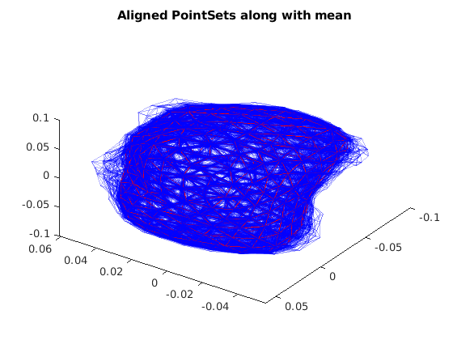

Contents
MyMainScript for Part 3 of assignment
to_save = 1;
Loading Data
bone_data = load('../../data/bone3D.mat');
results_folder = '../../results/bone3D/';
point_set_data = bone_data.shapesTotal;
polygon_faces = bone_data.TriangleIndex;
dim = size(point_set_data, 1);
num_points = size(point_set_data, 2);
num_point_sets = size(point_set_data, 3);
Plotting Original Point Sets Data
has_mean = 0;
plot_data_points(point_set_data, polygon_faces, num_point_sets, has_mean, 0, 'Original_Point_Sets.png', 'Original Point Sets', 1, to_save, results_folder);
tic;
Convert Point Sets to align them in Preshape Space
point_set_data_norm = make_preshape(point_set_data, dim, num_points);
has_mean = 0;
plot_data_points(point_set_data_norm, polygon_faces, num_point_sets, has_mean, 0, 'Preshape_Space.png', 'Point Sets in Preshape Space', 1, to_save, results_folder);
Applying algorithm for getting the mean shape
mean_new = point_set_data_norm(:,:,1);
diff_means = 1;
threshold = 1e-7;
while (diff_means > threshold)
mean_old = mean_new;
for i = 1:num_point_sets
point_set_data_norm(:,:,i) = similarity_transform(mean_old, point_set_data_norm(:,:, i));
end
mean_new = find_mean(point_set_data_norm);
diff_means = max(max(abs(mean_old - mean_new)));
end
has_mean = 1;
plot_data_points(point_set_data_norm, polygon_faces, num_point_sets, has_mean, mean_new, 'Mean_Aligned_PointSets_Random_Color.png', 'Aligned PointSets along with mean', 1, to_save, results_folder);
has_mean = 1;
plot_data_points(point_set_data_norm, polygon_faces, num_point_sets, has_mean, mean_new, 'Mean_Aligned_PointSets.png', 'Aligned PointSets along with mean', 0, to_save, results_folder);

Covariance Analysis
point_set_data_norm_flat = reshape(point_set_data_norm - repmat(mean_new, [1,1,num_point_sets]), [dim*num_points, num_point_sets]);
cov_mat = double(point_set_data_norm_flat * point_set_data_norm_flat') ./ double(num_point_sets);
[V,D] = eigs(cov_mat, dim*num_points);
f = figure();
title('EigenValues');
plot(D);
if to_save
saveas(f, strcat(results_folder, 'EigenValues.png'));
end
eigVec1 = V(:, 1);
eigVal1 = D(1,1);
eigVec2 = V(:, 2);
eigVal2 = D(2,2);
Modes of Variation 1
mode_of_var1_inc = mean_new + 2*sqrt(eigVal1)*reshape(eigVec1, [dim, num_points]);
mode_of_var1_dec = mean_new - 2*sqrt(eigVal1)*reshape(eigVec1, [dim, num_points]);
mode_of_var1_inc = mode_of_var1_inc ./ norm(mode_of_var1_inc, 'fro');
mode_of_var1_dec = mode_of_var1_dec ./ norm(mode_of_var1_dec, 'fro');
f = figure();
title("Modes of variation 1 with the mean");
hold on;
patch('Faces',polygon_faces,'Vertices',mode_of_var1_inc(:,:,1)','FaceColor',[1,1,1],'EdgeColor',[0,0,1], 'FaceAlpha', 0, 'EdgeAlpha', 1);
patch('Faces',polygon_faces,'Vertices',mode_of_var1_dec(:,:,1)','FaceColor',[1,1,1],'EdgeColor',[1,0,0], 'FaceAlpha', 0, 'EdgeAlpha', 1);
hold off;
view(-145, 45)
if to_save
saveas(f, strcat(results_folder, 'Modes_of_variation1.png'));
end
Modes of Variation 2
mode_of_var2_inc = mean_new + 2*sqrt(eigVal2)*reshape(eigVec2, [dim, num_points]);
mode_of_var2_dec = mean_new - 2*sqrt(eigVal2)*reshape(eigVec2, [dim, num_points]);
mode_of_var2_inc = mode_of_var2_inc ./ norm(mode_of_var2_inc, 'fro');
mode_of_var2_dec = mode_of_var2_dec ./ norm(mode_of_var2_dec, 'fro');
f = figure();
title("Modes of variation 2 with the mean");
hold on;
patch('Faces',polygon_faces,'Vertices',mode_of_var2_inc(:,:,1)','FaceColor',[1,1,1],'EdgeColor',[0,0,1], 'FaceAlpha', 0, 'EdgeAlpha', 1);
patch('Faces',polygon_faces,'Vertices',mode_of_var2_dec(:,:,1)','FaceColor',[1,1,1],'EdgeColor',[1,0,0], 'FaceAlpha', 0, 'EdgeAlpha', 1);
hold off;
view(-145, 45)
if to_save
saveas(f, strcat(results_folder, 'Modes_of_variation2.png'));
end
toc;
Elapsed time is 15.777625 seconds.